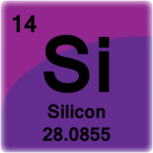
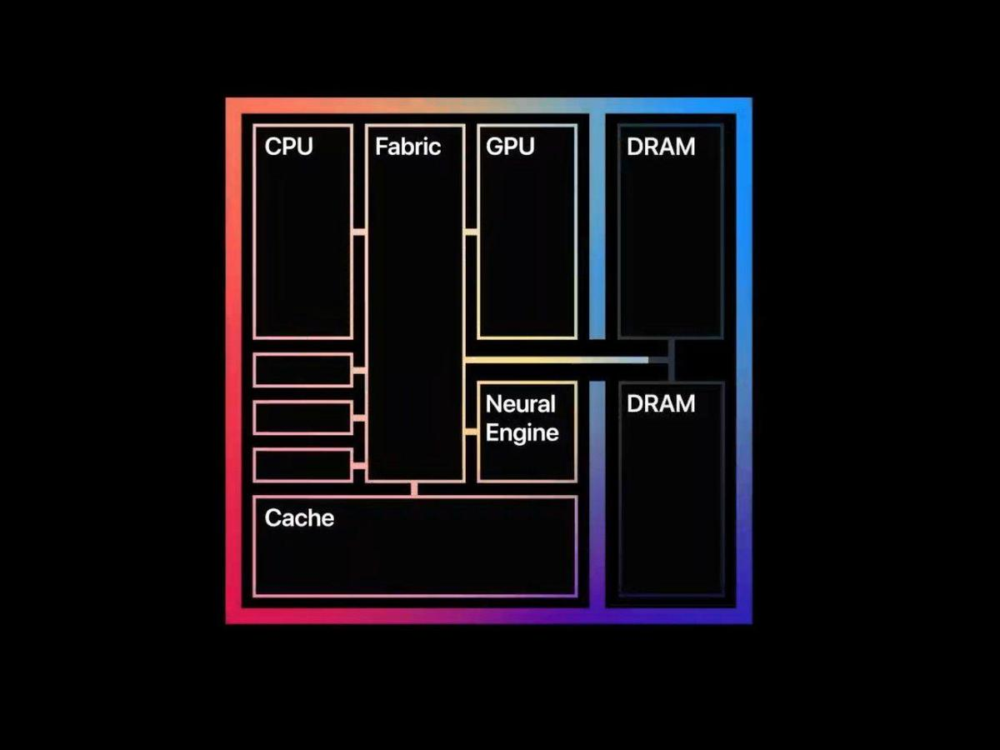

Silicon has the atomic number of 14. It has the atomic mass of 28.086 atomic mass units and as 14 Electrons, Neutrons, and Protons. Silicon has 4 valence electrons. Valence electrons are electrons in the outermost shell of the atom that participate in chemical bonding. Chemical bonding is the interactions that turns atoms into molecules, irons, and crystals. Here is the image of silicon in the periodic table. 
Silicon is a metalloid. A metalloid has the properties of both Nonmetals and metals. Silicon is a dark gray solid. The element has a metallic shine and is soluble or can be dissolved in hydrofluoric acid and alkalis. It melts at 1417 degrees celcius and boils at 2600 degrees celcius. Since silicon is a metalloid it is a semi-conductor. A semi-conductor is a solid that has the properties of conduction of an insulator and a metal. An insulator does not allow electricity pass through. Here is a Video of Silicon being dissolved in Hydrofluoric Acid.
Silicon is inactive at regular temperatures, but when it is heated it reacts a lot with halogens such as Flourine and Chlorine. Halogens are reactive nonmetallic elements. They are located at group 17 or 7a, which is the verticle column in the periodic table. Here is the reaction of Silicon and Chlourine.
Silicon is not found "free" in nature meaning you can not just find it in a tree or on the grass. Rather it is found in silicon dioxide which can be found in sand, quartz,rock crystals, etc. Something cool about silicon is that it makes up 25.7% of the Earth's crust in mass.
After the interesting facts about silicon, you may think that it does not affect you in any way, but that is wrong. If you are viewing this website there is a good chance that you are using silicon right now! Thats right, your computer has silicon to keep it running. Even though you are not breathing in silicon or touching it, silicon is important for your computers so it can have those small transistors for it to be up and running. Even though that is cool, you might be thinkning, "why don't computers just use metals?" The reason why silicon is more ideal to use instead of metals is because it is cheap, works with a wide range of temperatures, and the most important thing is that it is a semi conductor, this is a key difference because it allows it to conduct electricity on some conditions and also acts like an insulator in other conditions.
The company Apple makes there own silicon which is called Apple Silicon or "ARM", so they can make there own computer chips! The new M1 processor of the new Mac Mini, Macbook Air, and Macbook Pro. The M1 chip is an amazing chip because it has 16 cores but follow a special design process to make it more powerful and effecient. Although there are some flaws, it is a great first start and the future of this chip looks high. This is the design of the New M1 chip. 